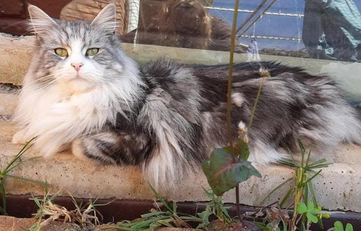

DISCOVER THE BREED
One of the largest and most distinctive domestic cat breeds, known for their impressive appearance, affectionate nature and gentle personalities.

THE MAINE COON
The Maine Coon is one of the largest domestic cat breeds. They are muscular in build, with large paws, a long, flowing tail and a distinctive semi-long coat.
They have a medium-sized head with prominent cheekbones and a broad nose. Their ears are large and slightly pointed, often with tufts of hair at the tips.
Maine Coons are also known for their affectionate and social personalities. They often enjoy spending time with their owners while still maintaining their own individual personalities.
PERSONALITY & BEHAVIOUR
Maine Coons are often affectionate towards their owners and enjoy attention and companionship. Their personalities can vary considerably from one cat to another.
Kittens are typically playful and athletic, and many Maine Coons continue to enjoy play well into adulthood.
Many Maine Coons are fascinated by water. Some will drink by wetting their paws first, while others may happily lie on a wet surface or investigate running water.
Maine Coons can bond well with children and other animals when properly introduced. Some can also be trained to walk on a harness and leash.
GROOMING
Despite their impressive coats, Maine Coons can be relatively straightforward to groom. Regular brushing helps keep the coat clean, shiny and free from excessive tangles.
A weekly brushing routine can be enough for many Maine Coons, although individual cats may require more frequent grooming depending on their coat type and condition.
COMMON MISCONCEPTIONS
No cat breed is truly hypoallergenic. While some people may react less to individual cats, Maine Coons still produce allergens.
Size alone does not determine quality. Overall wellbeing is far more important than achieving extreme size.
Many Maine Coons are fascinated by running water or enjoy playing with it, but not every individual enjoys getting wet.
Many enjoy being close to their owners, but some prefer sitting beside you rather than on your lap.
Ear tufts, sometimes called lynx tips, are often desirable, but not every Maine Coon develops prominent ones.
SIZE & MATURITY
Maine Coons are one of the largest domestic cat breeds. Adult size can vary considerably between individual cats.
Unlike many cats, Maine Coons mature slowly and can continue developing for several years. They may continue growing and filling out until approximately 3–5 years of age.
Because of this slow development, a young Maine Coon should not be judged solely by their size at an early age.
COLOURS & PATTERNS
Maine Coons can be found in a wide variety of colours and patterns.
COLOUR INFORMATION
One common misconception is that every colour seen online is recognised within the Maine Coon breed.
The following colours are not recognised in the traditional Maine Coon breed standard:
Website made by Michelle van Vuuren